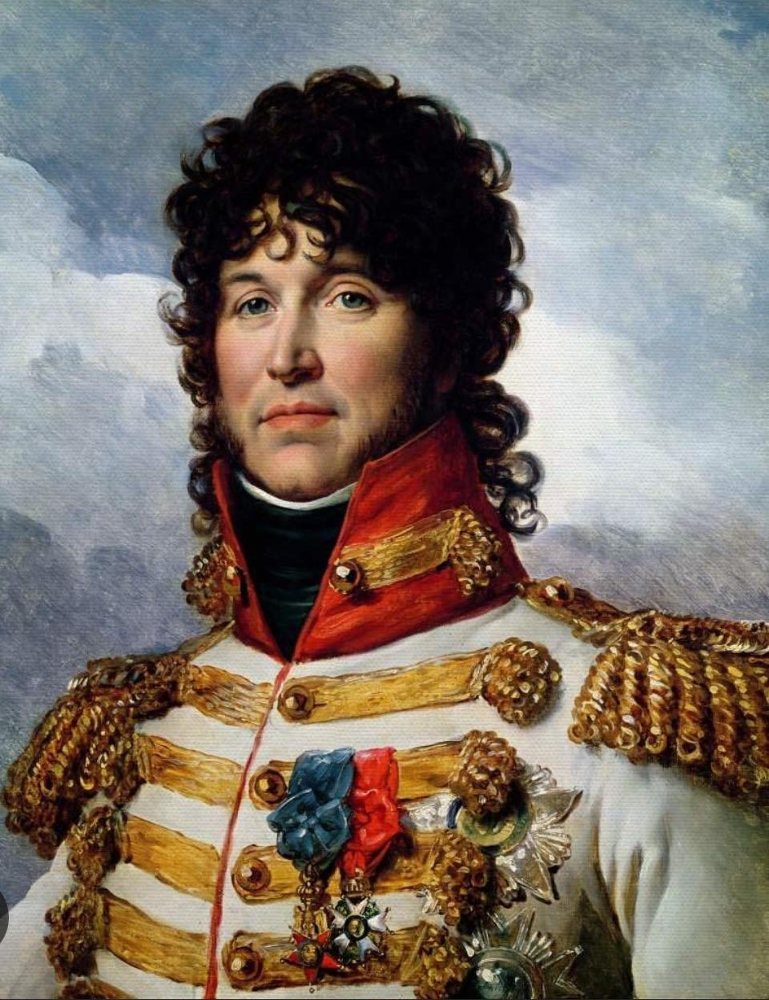

NAPOLEON'S MARSHALS
NAPOLEON'S MARSHALS The Marshals of Napoleon
A Need For Capable Commanders

In the tumultuous landscape of the Napoleonic Wars, capable commanders played a pivotal role in Napoleon Bonaparte's military successes. Their strategic brilliance and battlefield prowess were crucial in executing complex maneuvers and adapting to rapidly changing circumstances. Napoleon's reliance on his trusted marshals, such as Michel Ney and Louis-Alexandre Berthier, highlighted the significance of skilled leadership in maintaining operational efficiency and achieving decisive victories. These commanders not only embodied tactical genius but also inspired their troops, fostering a formidable fighting spirit essential for overcoming formidable European coalitions.
The effectiveness of Napoleon’s military campaigns was intrinsically linked to the competency of his subordinate leaders. Each commander brought unique expertise and innovative strategies that complemented Napoleon’s grand vision, ensuring that his armies remained a cohesive and adaptive force. The dynamic interplay between Napoleon’s overarching strategies and the on-the-ground execution by his marshals exemplified how leadership at multiple levels could amplify a military force's effectiveness. Their ability to lead with both strategic foresight and tactical flexibility was instrumental in shaping the course of the Napoleonic Wars.